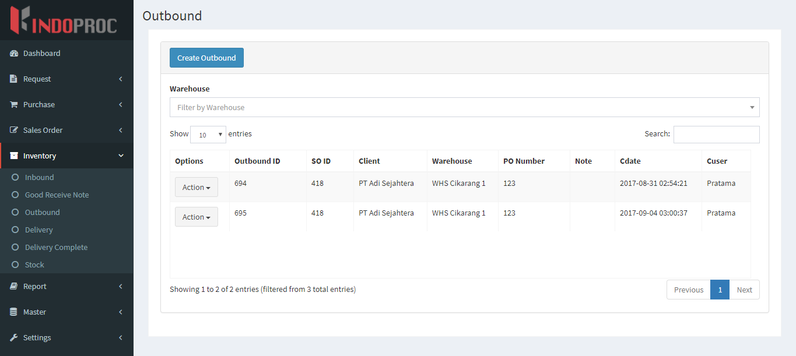
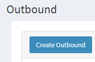
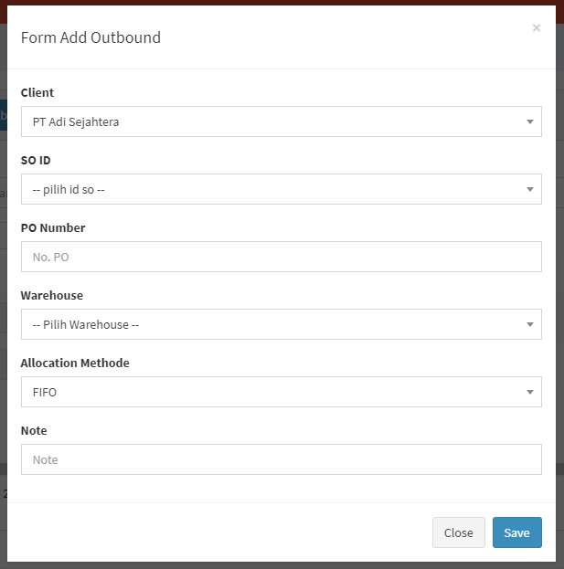
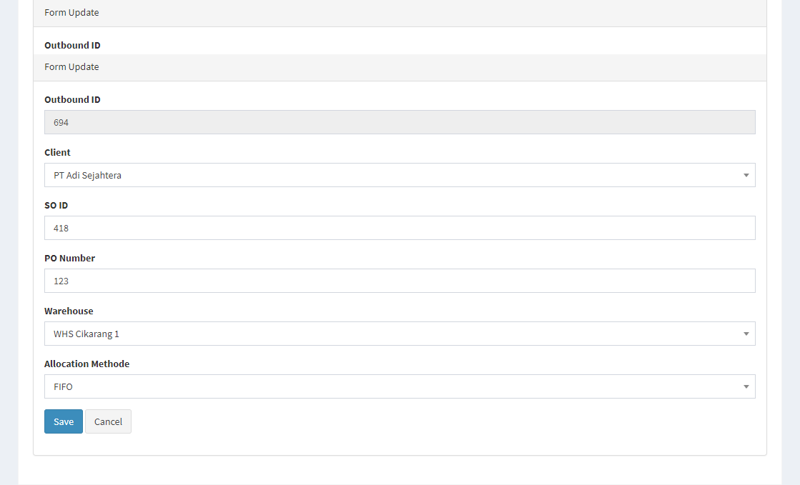
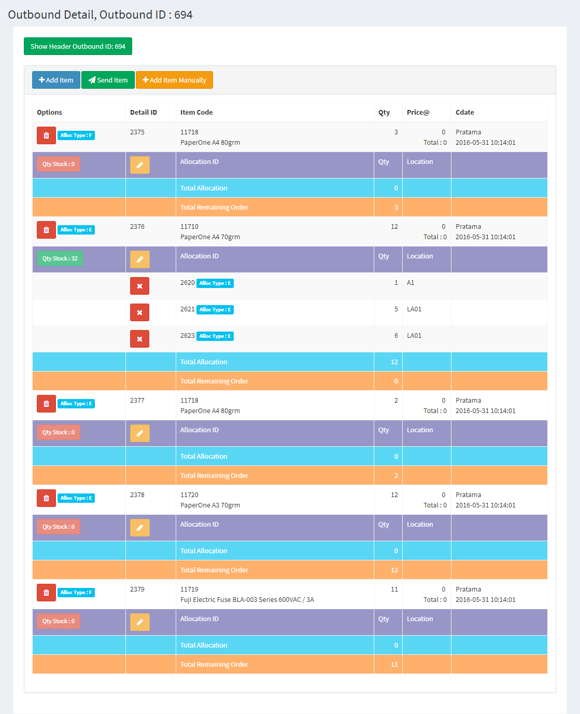

Outbound List
Anda dapat menambahkan daftar outbound Anda sendiri ke situs web. Untuk menambahkan atau melihat daftar outbound, Anda bisa mengklik menu ‘Inventory’ dan pilih ‘Outbound’.

- Ada daftar outbound yang akan ditampilkan di halaman ini. Ini akan menunjukkan options, outbound ID, Supplier, Ext No., Order ID, Warehouse, Cdate dan Cuser dari outbound tersebut.
- Anda juga bisa menyortir outbound dengan outbound ID.
Create New Outbound

- Klik tombol “Create Outbound” di kiri atas halaman ini.

- Muncul Form Add dan Anda bisa memasukkan Client, SO ID, PO Number, Warehouse, Allocation Methode, dan Note.
- Kemudian klik tombol “Save” untuk menyimpan data outbound.
Edit/Update Outbound
- Anda bisa klik tombol “Edit” pada baris yang ingin Anda edit.

- Form Edit akan dibuka dan Anda bisa mengubah data outbound di sana.
- Kemudian klik tombol “Save” untuk menyimpan data outbound.
Outbound Detail
- Anda bisa klik tombol “Detail” pada baris yang ingin Anda lihat lebih detail.

{kind=link}
{kind=link}
{kind=link}
{kind=link}
{kind=link}
{kind=link}